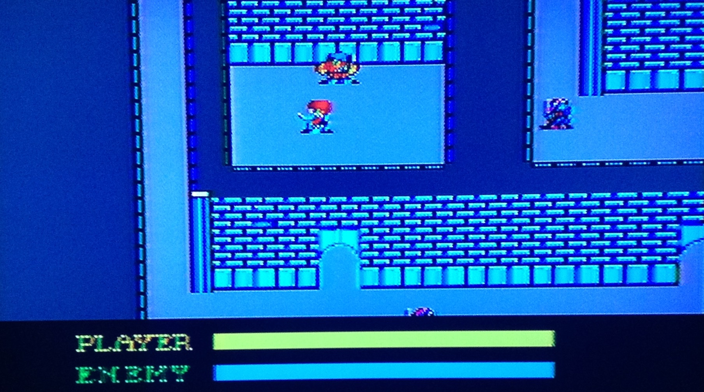

Ys: The Vanished Omens Review
May 11th 2016
Ys: The Vanished Omens was the Sega Master System version of the first Ys game. I found the game quite unique especially for a game from 1988. The games plot and setting is very similar to other games in the RPG genre but the way you fight enemies and interact with the environment is very different.
Story, World, Style: There are only two towns in the medieval style fantasy world that Ys is based in which offer shops and clues for your quest. One thing I like about the game is that when you enter a building you are given a scene of the building and a list of people to talk to. This saves time walking around but also makes the game feel a bit smaller.
A problem with the main town in the game is that buildings are not labeled and look very similar, which makes returning somewhere lengthy as I found myself going in and out of buildings trying to find the place I'm looking for.
The NPCs in the towns will speak to you just by running into them. This can get annoying as if you make accidental contact with them you'll have to speak to them. Luckily the NPCs don't talk for too long. The language in this game whether spoken by NPCs or read from books is very old fashion and dramatic.
One nice feature of the game is that you can save or load a game from anywhere on the overworld map or a dungeon with the exception of a boss battle. This is useful as I found myself grinding up levels and wanting to save often to secure my experience points.
Battle: At first, battles are very confusing. It's also what sets Ys apart from other games and after a while actually makes it stand out from other RPGs of that time. You actually don't slash enemies like in Zelda or use a turn based attack like Final Fantasy. You can deal damage to enemies by running into them and either clipping the side of them or hitting them from the side. At first it seems strange and impossible to do but after a while I really enjoyed it. I would not want every game to be this way but it was a nice change from the traditional RPG.
The game has a health replenishing system that looks more like Call of Duty game than an old time RPG. If you stay still your health will slowly replenish itself. Your health will not replenish in certain areas of the game so you cannot rely on it totally. Your enemies health will not replenish which will make it easier on you.
Bosses: Bosses can be tough but each boss requires a different strategy and practice which makes the game pretty fun and non repetitive. It is easy to save right before a boss which helps. I found that it was too hard to beat the last two bosses using the Sega Master System controller and had to use a Sega Genesis controller which is a lot less stiff. You might want to use a Genesis controller right from the start.
Leveling up / Items: There are only ten levels in Ys and each time you level up you get quite a bit stronger. It takes a while to level up, but it really helps a lot if your struggling with a boss.
Items also help a lot. Once you upgrade your weapons/armour you can notice quite clearly how your attack and/or defense gets much better.
In addition to typical RPG items like armour, shields and swords there are rings that the player can obtain. The rings give the player different powers such as increased damage, extra shields, slowed down time and allowing the player to heal in areas that don't have health regeneration. The only downside to rings is that they don't work when fighting a boss, which will make you rethink your strategy when moving from the normal dungeons to the boss battle.
Conclusion: Ys: The Vanished Omens is not one of the great RPGs but it is fun and interesting. They story and atmosphere might be very similar to other RPGs of that time, but the battle system is unique and worth playing if you're looking for something different.